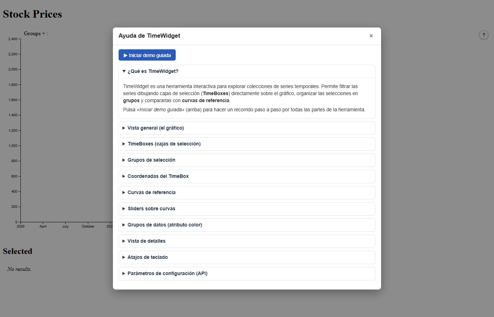
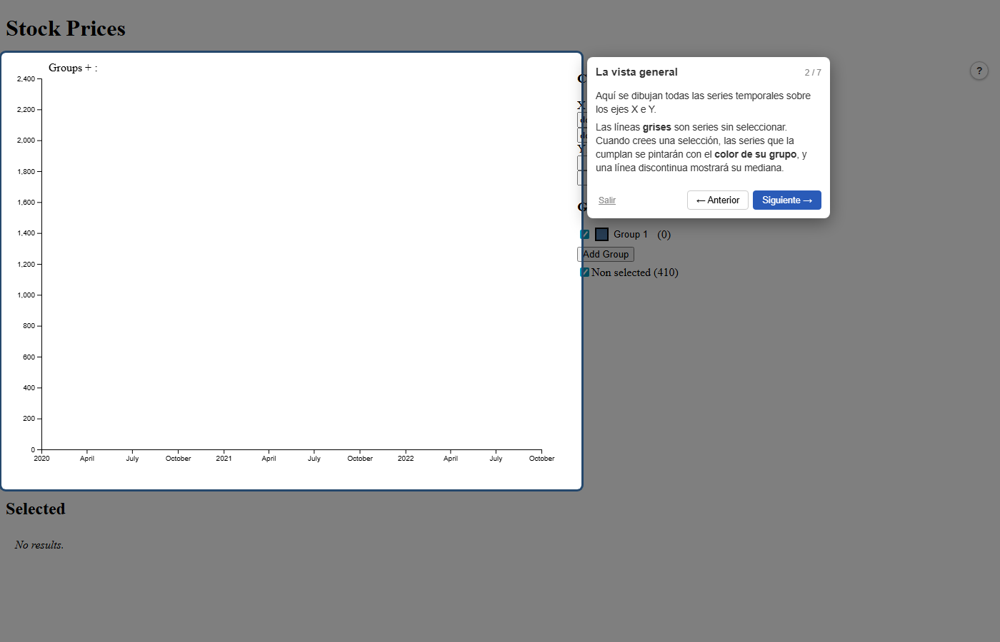

Universidad Rey Juan Carlos
Escuela Técnica Superior de Ingeniería Informática
Escuela Técnica Superior de Ingeniería Informática
Trabajo de Fin de Grado
TimeWidget: motor de búsqueda visual
de patrones en series temporales
Curvas de referencia activas · lógica booleana unificada · renderizado WebGPU
Índice
Estructura de la presentación
1
Contexto y problema
Por qué hace falta un motor de búsqueda visual
4
Demo en vivo
Motor de búsqueda · datos reales Fundación Canguro
2
Punto de partida
TimeWidget: qué existía y qué faltaba
5
Validación y resultados
8/8 escenarios · SUS 88.0 · mejora 19× WebGPU
3
Tres contribuciones
Curvas activas · BVH + lógica booleana · WebGPU
6
Conclusiones y trabajo futuro
H1, H2, H3 confirmadas · piloto clínico en Bogotá
El problema
Ver no es encontrar
Fundación Canguro, Bogotá: seguimiento semanal del perímetro craneal de neonatos prematuros.
El clínico necesita encontrar a quienes se desvían del patrón de crecimiento.
① CURVAS DE CRECIMIENTO OMS · PERÍMETRO CRANEAL
✕ Las curvas OMS son un dibujo superpuesto: el sistema no puede seleccionar a los pacientes que crecen por debajo de −2SD
② Y AL CRECER N — EL RENDIMIENTO SE DESPLOMA
✕ A partir de 5 000 series el motor Canvas 2D cae a 16 fps: la exploración interactiva deja de ser viable
Punto de partida · análisis del sistema nativo (OE1)
Cinco frentes de evolución
El análisis del sistema nativo delimitó cinco frentes — los objetivos específicos OE2–OE6.
Filtrado espacial OE2
NATIVO
Solo rectángulos (TimeBoxes)
TFG
Curvas y puntos discretos consultables
Herramientas OE3
NATIVO
TimeBoxes Intersect / Contains
TFG
Sliders de corredor y tolerancia ε en vivo
Lógica de consulta OE4
NATIVO
NOT solo entre TimeBoxes
TFG
AND / OR / NOT sobre todos los filtros
Renderizado OE5
NATIVO
Canvas 2D — techo N = 5 000
TFG
WebGPU con fallback automático
Interfaz de control OE6
NATIVO
Controles básicos de brushes
TFG
Panel de curvas, ε y lógica
Objetivo
TimeWidget ya buscaba patrones con TimeBoxes.
El objetivo: convertirlo en un motor de búsqueda visual más expresivo y a otra escala.
El objetivo: convertirlo en un motor de búsqueda visual más expresivo y a otra escala.
Expresividad
Preguntas que antes no podían formularse: filtrar por curvas clínicas, proximidad ε, lógica completa
Rendimiento
De un techo práctico de 5 000 series a exploración fluida con 100 000
Metodología — modelo iterativo e incremental
Contribución 1 · expresividad
Curvas de referencia: de dibujo a filtro
✕
NATIVO — la curva −2SD es solo un overlay: ningún filtro puede usarla
→
✓
TFG — la misma curva selecciona series above · below · por proximidad ε
Tres tipos:
funcfunción continua
·
thresholdumbral horizontal o lineal
·
pointspuntos discretos — tolerancia ε ajustable en tiempo real
Contribución 1 · expresividad
Nuevas herramientas, combinables entre sí
slider Corredor above / below
Intersect (cruza el área) · Contains (completamente dentro)
ε Proximidad a puntos discretos
Radio ajustable en tiempo real · monotonía E5: ε = 2→94, 6→244, 12→338 series
∧ ∨ ¬ Lógica de consulta completa
AND dentro de grupo · OR entre grupos · NOT sobre cualquier filtro
Contribución 2 · arquitectura
Arquitectura de partida
FUNCIONAL · INTERACCIÓN
BrushInteraction.js
gestión de filtros
consulta
BVH.js
solo seg–rect (TimeBoxes)
un único tipo de filtro espacial
RENDIMIENTO · RENDERIZADO
TimeWidget.js
API pública
delega
TimeLineOverview.js
renderizado + coordinación
dibuja
Canvas 2D
único motor · CPU-bound
sin alternativa de renderizado
Curvas no consultables
Solo overlay — ningún filtro anclable
Sin sliders ni ε
Tipos de filtro inexistentes
CPU-bound
Bloqueante con N elevado
Contribución 2 · arquitectura
Arquitectura evolucionada
FUNCIONAL · INTERACCIÓN
BrushInteraction.js
sin cambios en la API
consulta
BVH.js extendido
seg–rect
seg–seg
ray cast
dist ε
4 primitivas · curvas, corredores y ε
RENDIMIENTO · RENDERIZADO
TimeWidget.js
sin cambios
delega
TimeLineOverview.js FACHADA
¿navigator.gpu? — decide al inicializar
sí · no
WebGPURenderer.js
GPU · 1 draw call
Canvas 2D
fallback auto
doble motor · transparente al cliente
Capa espacial
3 categorías de entidad · O(k) incremental
Capa de filtrado
AND / OR / NOT sobre contrato getResults()
Capa gráfica
WebGPU con fallback transparente al cliente
Contribución 2 · BVH
Fase amplia — localizar candidatos en O(1)
①
El usuario dibuja la consulta
TimeBox, slider, curva o puntos — todo se reduce a un área
②
Las celdas salen de una división
col = ⌊ x / cellW ⌋ · row = ⌊ y / cellH ⌋
③
Solo esas celdas se inspeccionan
Sus series pasan a la fase estrecha — el resto se ignora
Contribución 2 · BVH
Fase estrecha — 4 primitivas geométricas
①
seg – rect
TimeBoxes · fórmula paramétrica
②
seg – seg
Curvas de referencia · t, u ∈ [0, 1]
③
ray casting
Corredores above/below · par/impar cruces
④
dist punto–segmento
Tolerancia ε · proyección acotada al segmento
Contribución 3 · rendimiento
Canvas 2D — el cuello de botella
①
El bucle dibuja serie a serie
for (serie of datos) → ctx.stroke() ← bloqueo
②
N bloqueos secuenciales en 1 core
El frame crece linealmente con N — revienta el presupuesto de 16.6 ms (60 fps)
③
N drawcalls → N sincronizaciones CPU↔GPU
Canvas sí usa GPU para rasterizar — el cuello es 1
stroke() por serie: imposible batchear con colores distintosContribución 3 · rendimiento
WebGPU — la migración
①
Detección única en init()
navigator.gpu?.requestAdapter()
②
Fachada con fallback automático
Con adapter → WebGPURenderer · sin él → Canvas 2D — el cliente no cambia
③
Cada frame, una sola draw call
pass.drawIndexed(totalVerts) ← geometría subida 1×
Contribución 3 · rendimiento
Subir una vez, dibujar siempre
1 · Upload único de geometría
Geometría subida una vez · estilos actualizados por frame
2 · Cache de estilos por frame
Sin cambio en selección → re-upload omitido
3 · MSAA adaptativo
Antialiasing off para N > 10k · ahorro 4×
4 · LOD adaptativo en 2 etapas opcional · lod:true
Submuestreo de puntos (N > 20k) · salto de líneas (N > 60k)
Efecto del LOD · fragmentos por fotograma · N = 100k
72.9M
→
36.5M
SIN LOD
CON LOD
−50 %
de carga en el rasterizador
REFERENCIA DE FLUIDEZ · FPS
016304560+
inutilizablelagaceptablefluido ✓excelente
El LOD solo afecta al dibujo — el BVH evalúa siempre el 100 % de las series: conteos exactos.
Resultados · rendimiento
La ventaja crece con los datos
WebGPU
Canvas 2D
|
fluido ≥ 45 · interactivo 17–44 · inutilizable ≤ 16
factor de mejora 1.04× → 2.56× → 10.02× →
19.18×
Resultados · validación
Hipótesis H2 y H3 verificadas — corrección funcional y usabilidad
8/8
escenarios · todos PASS
Caja negra orientada a propiedades
E1–E2
TimeBox · S_C ⊆ S_I (81 ⊆ 223)
✓
E3–E4
Slider · contains ⊆ intersect (69 ⊆ 415)
✓
E5
Monotonía ε · 94 → 244 → 338
✓
E6–E8
Booleana · AND, NOT, coherencia de estado
✓
88.0
SUS · Excelente
Think-aloud · 5 participantes
P1
90.0
P2
92.5
P3
87.5
P4
95.0
P5
75.0
025516888↑100
ítems S4 (ε) y S6 (expresividad): 4.8 / 5 ★
Resultado adicional · usabilidad
Sistema de ayuda integrado — hallazgo think-aloud convertido en feature
Los participantes reclamaron orientación sobre ε y los modos de filtro.
Respuesta: botón ? permanente y tour guiado paso a paso.

Modal de ayuda · 11 secciones acordeón · ES / EN

Tour guiado con spotlight · 7 pasos · «Siguiente →»
✓
Suite E2E Playwright — ejecutada en cada push en GitHub Actions (CI): botón visible, modal abre, tour avanza correctamente
Conclusiones
De visualizador a motor de búsqueda
PUNTO DE PARTIDA · LIMITACIONES
✕
Curvas de referencia solo visuales — ningún filtro anclable
✕
Lógica booleana incompleta — NOT solo en TimeBoxes
✕
Canvas 2D inutilizable a 5 000 series · 16 fps
TFG · CONTRIBUCIONES
✓
3 tipos de curva activa — fronteras de filtrado con tolerancia ε
✓
AND · OR · NOT sobre todos los tipos — contrato
getResults()
✓
WebGPU — 16.7 fps a 100 000 series · factor 19.18× creciente
H1 ✓
Tiempo real hasta 100k series
16.7 fps · WebGPU
H2 ✓
Usabilidad Excelente
SUS 88.0
H3 ✓
Mejora creciente con N
1.04× → 19.18×
TimeWidget es ahora un motor de búsqueda visual de patrones.
Líneas futuras
Hacia el piloto clínico
USABILIDAD
Estudio ampliado
N ≥ 20 · perfil clínico real · sesiones remotas
Terminología
«Rango de tolerancia» en lugar de ε
RENDIMIENTO
GPU dedicada
Benchmarks actuales en integrada · escenario conservador
Indicador de motor
WebGPU / Canvas 2D visible en tiempo real
DESPLIEGUE
Piloto en Bogotá
Fundación Canguro · datos reales
Seguimiento longitudinal
de ~500 neonatos prematuros
de ~500 neonatos prematuros
Universidad Rey Juan Carlos
Escuela Técnica Superior de Ingeniería Informática
Escuela Técnica Superior de Ingeniería Informática
Trabajo de Fin de Grado
TimeWidget: motor de búsqueda visual
de patrones en series temporales
Curvas de referencia activas · lógica booleana unificada · renderizado WebGPU
Pregunta frecuente · rendimiento
¿Por qué no optimizar Canvas 2D?
✓ Canvas 2D sí usa GPU para rasterizar
Cada
ctx.stroke() envía geometría a la GPU y ésta la rasteriza. El hardware gráfico sí trabaja.✕ El cuello: N drawcalls independientes desde CPU
Con N series → N llamadas al driver GPU. Cada una implica un flush de comandos y sincronización CPU↔GPU. El overhead crece linealmente con N.
¿Por qué no batchear con Path2D?
Path2D agrupa trazados pero exige el mismo strokeStyle para todo el batch. Imposible si cada serie necesita su propio color/opacidad para mostrar la selección.Solución: cambiar de modelo
WebGPU sube la geometría completa una sola vez y aplica estilos por serie mediante un buffer en GPU. Un único draw call — sin N sincronizaciones.
Canvas 2D — N=100 000
for (s of series) {
ctx.strokeStyle = colorDe(s)
ctx.stroke() ← drawcall #N
} × 100 000 sync CPU↔GPU
WebGPU — N=100 000
uploadGeometry(allSeries) // 1× al inicio
styleBuffer.update(colors) // GPU buffer
device.draw() ← 1 drawcall total
16.7 fps (WebGPU) vs 0.9 fps (Canvas 2D) · N=100 000